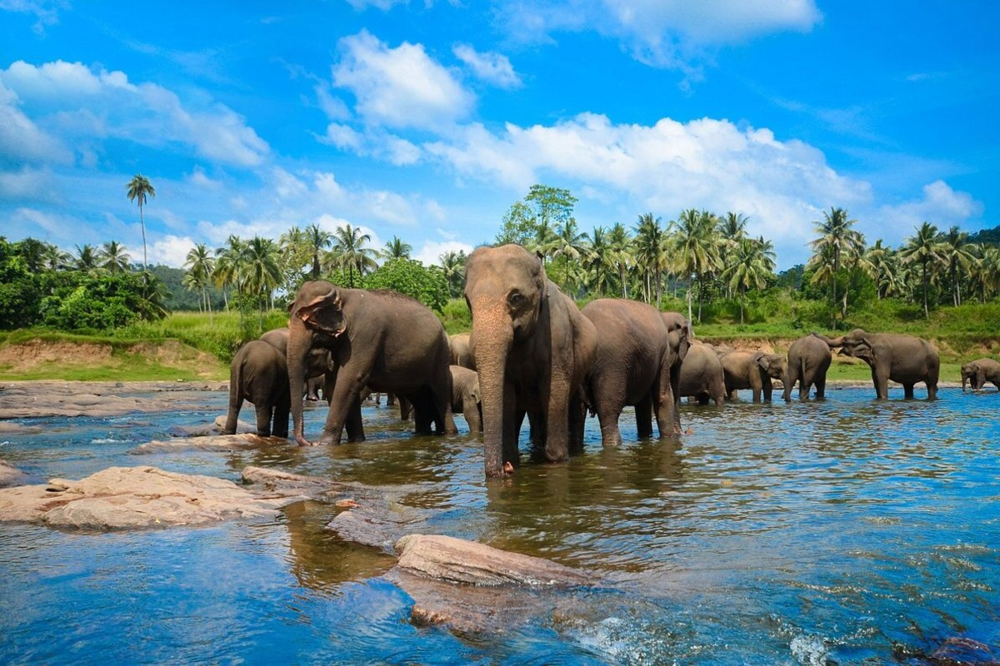
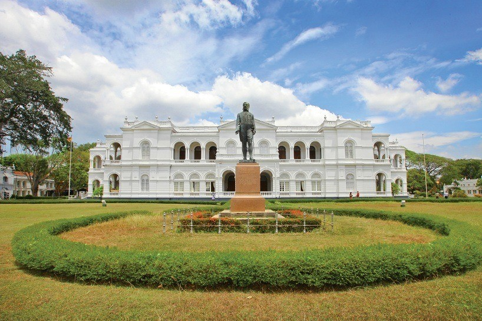
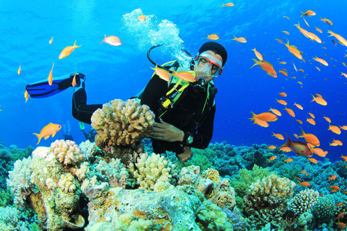
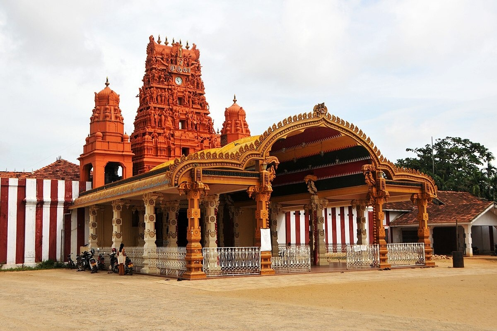
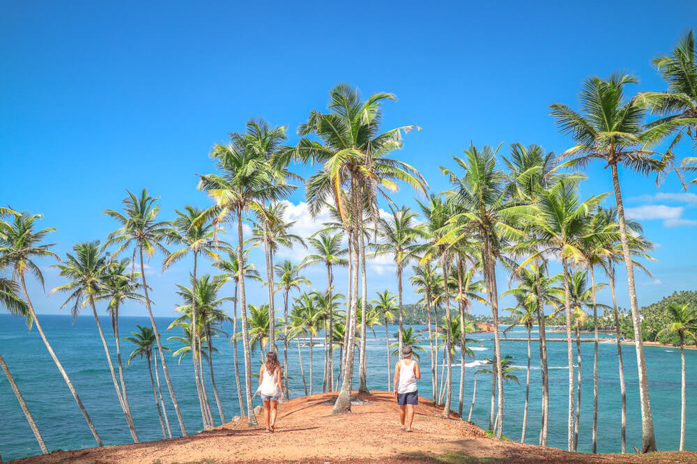
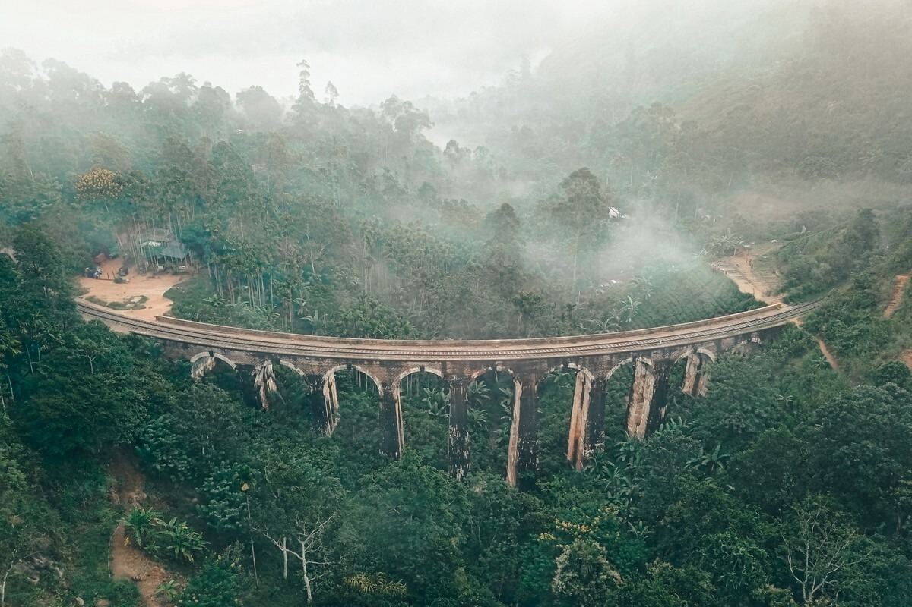
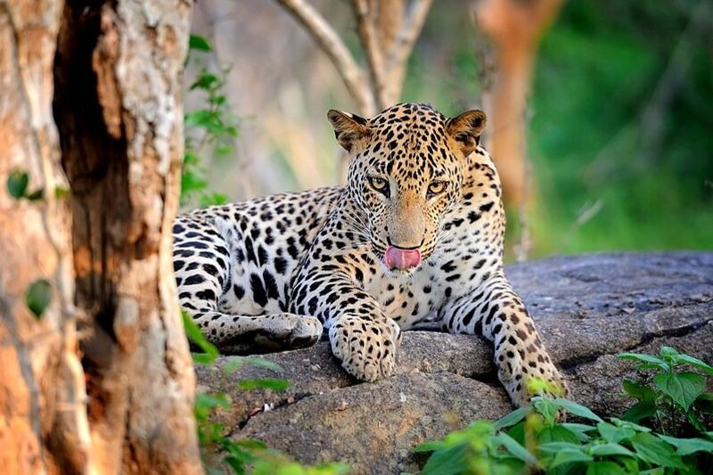
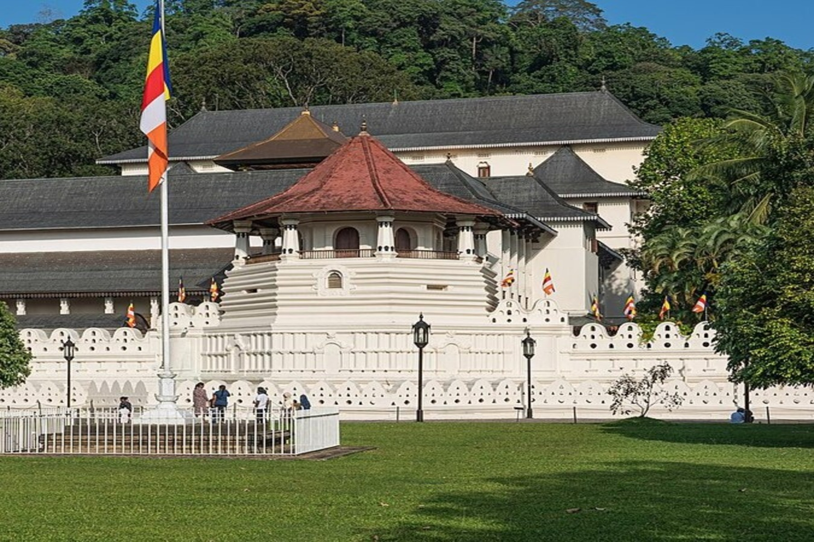

Pinnawala Elephant Orphanage

Colombo Museum

Hikkaduwa Coral Reef

Nallur Kovil Jaffna

Mirissa

Nine Arch Bridge

Yala National Park

Temple of the Tooth
* Click on the image to view details.